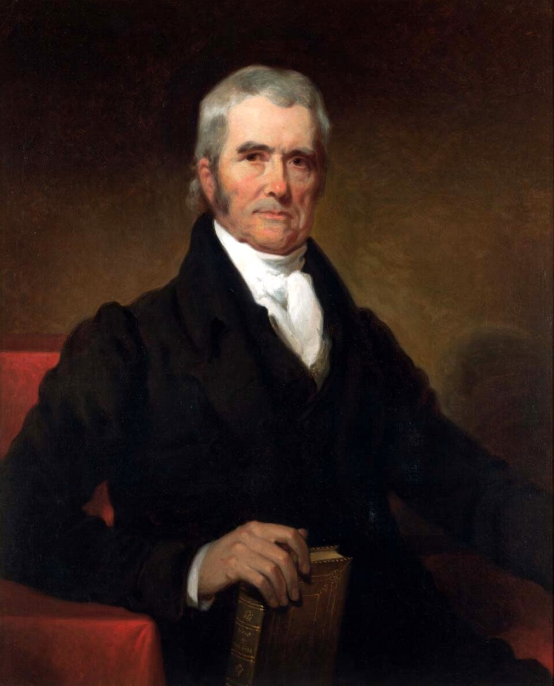
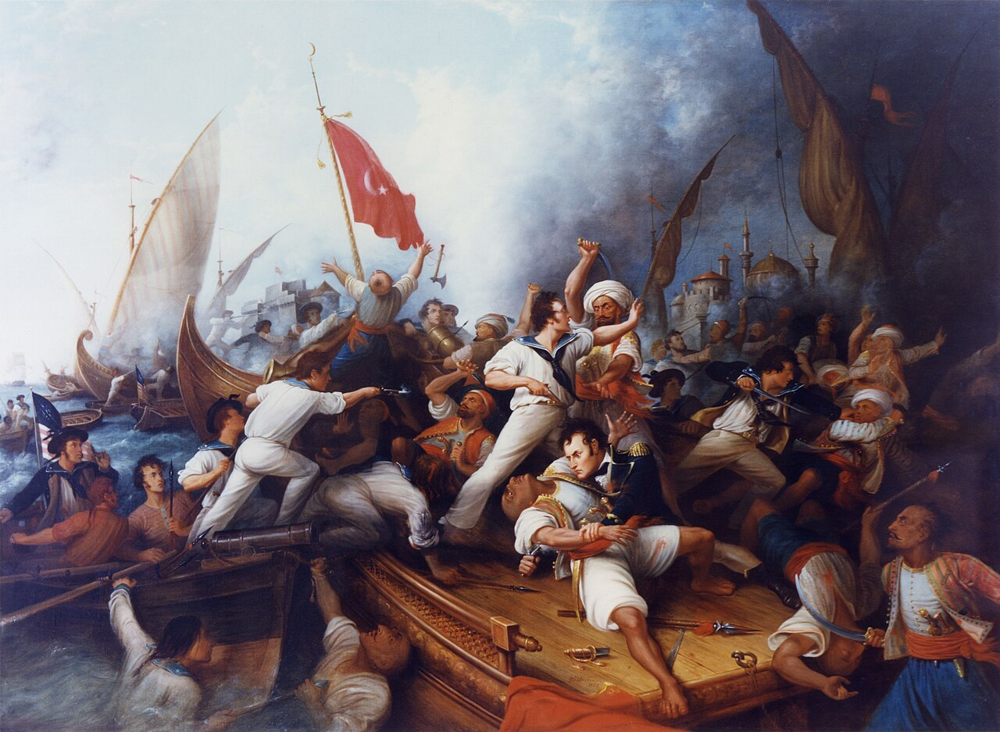
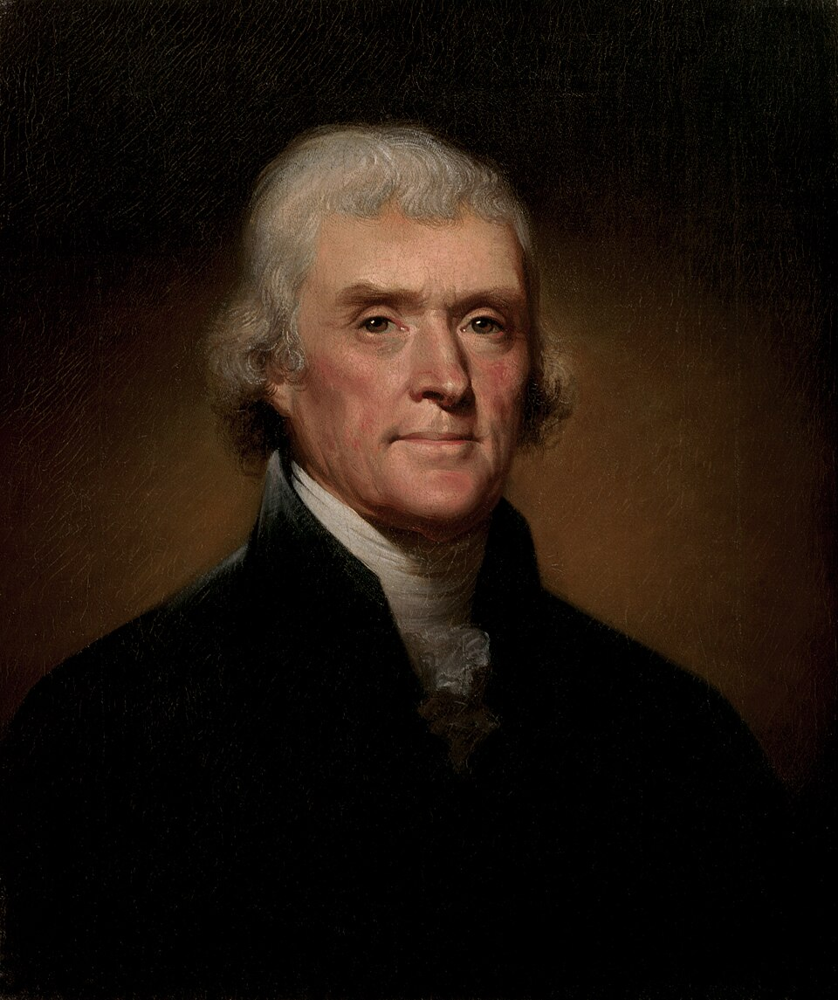

Directions: Your group has the purchase file. Each station holds one record from Jefferson's first term. For every record, state what it shows Jefferson doing with power. Work through the five stations in order, then deliver the closing verdict in Part 2.
Source: United States and the French Republic, Louisiana Purchase Treaty, April 30, 1803 (Yale Avalon Project; from Hunter Miller, Treaties and Other International Acts, 1931; original spelling preserved). Audited TPSP bank record, louisiana-purchase-treaty-1803. Cuts are marked with ellipses.
Article I
[...] And whereas in pursuance of the Treaty and particularly of the third article the French Republic has an incontestible title to the domain and to the possession of the said Territory--The First Consul of the French Republic desiring to give to the United States a strong proof of his friendship doth hereby cede to the United States in the name of the French Republic for ever and in full Sovereignty the said territory with all its rights and appurtenances as fully and in the Same manner as they have been acquired by the French Republic in virtue of the above mentioned Treaty concluded with his Catholic Majesty.
[...]
Article III
The inhabitants of the ceded territory shall be incorporated in the Union of the United States and admitted as soon as possible according to the principles of the federal Constitution to the enjoyment of all these rights, advantages and immunities of citizens of the United States, and in the mean time they shall be maintained and protected in the free enjoyment of their liberty, property and the Religion which they profess.
[...]
What it shows Jefferson doing with power: ____________________________
State what Article I actually transfers. Quote the words for how completely France gives the territory up, and state whose title the treaty says France held.
Article III makes two promises to the inhabitants, one for the future and one for the meantime. State each promise, and state what the split between them tells you about how the United States planned to govern people it had just acquired.
Source: Chief Justice John Marshall, Marbury v. Madison, 1803 (Legal Information Institute, Cornell Law; punctuation modernized). Audited TPSP bank record, marbury-v-madison. Cuts are marked with ellipses.
The government of the United States has been emphatically termed a government of laws, and not of men. It will certainly cease to deserve this high appellation, if the laws furnish no remedy for the violation of a vested legal right. [...] It is emphatically the province and duty of the judicial department to say what the law is. Those who apply the rule to particular cases, must of necessity expound and interpret that rule. If two laws conflict with each other, the courts must decide on the operation of each. So if a law be in opposition to the constitution; if both the law and the constitution apply to a particular case, so that the court must either decide that case conformably to the law, disregarding the constitution; or conformably to the constitution, disregarding the law; the court must determine which of these conflicting rules governs the case. This is of the very essence of judicial duty. [...] Thus, the particular phraseology of the constitution of the United States confirms and strengthens the principle, supposed to be essential to all written constitutions, that a law repugnant to the constitution is void; and that courts, as well as other departments, are bound by that instrument. [...]

What it shows Jefferson doing with power: ____________________________
Marshall calls it the province and duty of the judicial department to say what the law is. State what happens, in his reasoning, when a law and the Constitution both apply to one case and point opposite ways, and quote the principle he says the Constitution's phraseology confirms.
This opinion was written against Jefferson's administration in a case Jefferson won. State what the Court refused to order, why it said it could not order it, and why a president who had just lost the argument about the commission had no ground to attack the decision.
Source: Thomas Jefferson to John Breckinridge, Monticello, August 12, 1803 (Founders Online, National Archives; from The Papers of Thomas Jefferson, vol. 41, ed. Barbara B. Oberg, Princeton University Press, 2014). Jefferson's spelling is as the transcription carries it. Cuts are marked with ellipses.
... our information as to the country is very incompleat: we have taken measures to obtain it full as to the settled part which I hope to recieve in time for Congress. ...
This treaty must of course be laid before both houses, because both have important functions to exercise respecting it. they I presume will see their duty to their country in ratifying & paying for it, so as to secure a good which would otherwise probably be never again in their power. but I suppose they must then appeal to the nation for an additional article to the constitution, approving & confirming an act which the nation had not previously authorised. the constitution has made no provision for our holding foreign territory, still less for incorporating foreign nations into our union. the Executive in siesing the fugitive occurrence which so much advanced the good of their country, have done an act beyond the constitution. the legislature in casting behind them Metaphysical subtleties, and risking themselves like faithful servants, must ratify & pay for it, and throw themselves on their country for doing for them unauthorised what we know they would have done for themselves had they been in a situation to do it. it is the case of a guardian, investing the money of his ward in purchasing an important adjacent territory; & saying to him when of age, I did this for your good; I pretend to no right to bind you. you may disavow me, and I must get out of the scrape as I can. I thought it my duty to risk myself for you. ...
What it shows Jefferson doing with power: ____________________________
State Jefferson's confession in his own words. What has the Constitution made no provision for, and what does he say the executive has done? Then state what must happen after Congress ratifies, in his plan, to cure the defect.
Work the guardian comparison. Who is the guardian, who is the ward, and what may the ward do when he comes of age? State what this comparison admits about the purchase that the treaty's own language at Station 1 never mentions.
Source: Teaching summary built from the public record. This station is a summary written for this lesson, not a period text. No words in it are quoted from a period document.
For years the United States had paid tribute to the Barbary states of North Africa, Algiers, Tunis, Tripoli, and Morocco, so that American merchant ships could cross the Mediterranean without being seized and their crews held for ransom. In 1801 the ruler of Tripoli, Yusuf Karamanli, demanded a larger payment. President Jefferson refused to pay more, and Tripoli declared war on the United States in May 1801. Jefferson sent a naval squadron to the Mediterranean, beginning a war of blockade and bombardment fought with the small navy his administration was otherwise cutting. In October 1803 the frigate Philadelphia chased a Tripolitan vessel, ran aground outside Tripoli harbor, and was captured with its crew of more than three hundred men, who were held prisoner. On the night of February 16, 1804, Lieutenant Stephen Decatur led a party into the harbor in a captured vessel, boarded the Philadelphia, and burned it so Tripoli could not use the frigate against American shipping. Commodore Edward Preble's squadron bombarded Tripoli through the summer of 1804. In 1805 an American led force marched on Derna, and Tripoli signed a treaty that June ending the war. The treaty ended tribute to Tripoli. The United States still paid sixty thousand dollars for the release of the Philadelphia prisoners, a ransom in all but name, and it kept paying other Barbary rulers until a second war with Algiers in 1815 ended the practice.

What it shows Jefferson doing with power: ____________________________
State the choice Jefferson faced in 1801 as this record gives it. What had the United States been paying, what did Tripoli demand, and what did Jefferson send instead of money?
State the settlement's two halves honestly. What did the treaty of 1805 end, and what did the United States still pay, and for whom? Then state what this war shows about the navy Jefferson was cutting at home.
Source: Thomas Jefferson, First Inaugural Address, March 4, 1801 (Yale Avalon Project). Audited TPSP bank record, jefferson-first-inaugural-1801. Cuts are marked with ellipses.
[...] But every difference of opinion is not a difference of principle. We have called by different names brethren of the same principle. We are all Republicans, we are all Federalists. If there be any among us who would wish to dissolve this Union or to change its republican form, let them stand undisturbed as monuments of the safety with which error of opinion may be tolerated where reason is left free to combat it. [...]
[...] Still one thing more, fellow-citizens -- a wise and frugal Government, which shall restrain men from injuring one another, shall leave them otherwise free to regulate their own pursuits of industry and improvement, and shall not take from the mouth of labor the bread it has earned. This is the sum of good government, and this is necessary to close the circle of our felicities.
[...]

What it shows Jefferson doing with power: ____________________________
State the program in Jefferson's own sentence. What kind of government does he call the sum of good government, what two things will it do, and what one thing will it never do?
Jefferson says every difference of opinion is not a difference of principle, and that those who would dissolve the Union should stand undisturbed. State how this sentence about tolerating error governs the pardons and the expired Sedition Act of the reading's first section.
Your group has read five records of one presidency: a treaty, a court opinion, a private letter, a war, and an inaugural program. First complete the table from your station work, then judge the file as a whole.
| Record | What it shows Jefferson doing with power, in one line |
|---|---|
| Station 1: The treaty | |
| Station 2: Marbury v. Madison | |
| Station 3: The Breckinridge letter | |
| Station 4: The Barbary War | |
| Station 5: The First Inaugural |
In a short paragraph, deliver your verdict. Was the Louisiana Purchase Jefferson acting against his principles, or Jefferson discovering what his principles were for? Defend the judgment from the documents: quote the program he announced at Station 5, quote his own account of the purchase at Station 3, and state what the treaty at Station 1 did that neither document's language could authorize or prevent. A strong verdict accounts for Marbury and the Barbary War as well, the court power he could not stop and the navy he used while cutting it.
What it shows Jefferson doing with power. Using the treaty power to acquire an empire at a stroke, and promising its people a citizenship his government would deliver slowly and by appointment in the meantime.
State what Article I transfers. France cedes the territory of Louisiana to the United States for ever and in full Sovereignty, with all its rights and appurtenances, as fully and in the same manner as France had acquired it from Spain. The treaty says France held an incontestible title to the domain and possession of the territory under its treaty with Spain.
State the two promises of Article III. For the future, the inhabitants shall be incorporated in the Union and admitted as soon as possible, according to the principles of the federal Constitution, to all the rights, advantages, and immunities of citizens. For the meantime, they shall be maintained and protected in the free enjoyment of their liberty, property, and the religion they profess. The split shows a government acquiring people first and citizens later, ruling an acquired population under a promise whose date it left open.
What it shows Jefferson doing with power. Refusing to deliver a Federalist commission, and winning the refusal at the price of a Court that claimed the power to void acts of Congress in the same opinion.
State Marshall's reasoning. It is the province and duty of the judicial department to say what the law is. When a law and the Constitution both apply to a case and conflict, the court must determine which rule governs, conforming to the Constitution and disregarding the law. The principle the phraseology confirms is that a law repugnant to the Constitution is void, and that courts, as well as other departments, are bound by that instrument.
State what the Court refused and why Jefferson could not attack it. The Court refused to order Madison to deliver Marbury's commission, because the section of the Judiciary Act of 1789 granting it power to issue the order was itself unconstitutional. Jefferson had the only outcome he wanted, the commission undelivered, so attacking the opinion would have meant demanding delivery of a Federalist judge's commission. The surrender of the case is what purchased the claim of judicial review.
What it shows Jefferson doing with power. Confessing in private that he had exceeded the Constitution, and planning to cure the excess afterward by asking the nation to approve what it had never authorized.
State the confession and the cure. The Constitution has made no provision for our holding foreign territory, still less for incorporating foreign nations into our union, and the Executive, in seizing the fugitive occurrence, have done an act beyond the constitution. After ratification, Congress must appeal to the nation for an additional article to the constitution, approving and confirming an act the nation had not previously authorised. In the event Jefferson drafted the amendment and abandoned it, and no amendment was ever adopted.
Work the guardian comparison. Jefferson is the guardian, the nation is the ward not yet of age, and the ward on reaching majority may disavow the guardian's purchase and leave him to get out of the scrape as he can. The comparison admits that the purchase bound the nation without the nation's prior authority, an admission the treaty's formal language of cession and sovereignty never makes. The letter also admits the government barely knew what it had bought: our information as to the country is very incompleat.
What it shows Jefferson doing with power. Refusing tribute and fighting a war with a small navy, the frigates of a government elected to cut military spending doing the work bribes had done.
State the choice of 1801. The United States had paid tribute to the Barbary states so its merchant ships could cross the Mediterranean unmolested. Tripoli's ruler demanded a larger payment in 1801. Jefferson refused to pay more, Tripoli declared war, and Jefferson sent a naval squadron to blockade and bombard instead of money.
State the settlement's two halves. The treaty of June 1805 ended tribute to Tripoli. The United States still paid sixty thousand dollars for the release of the Philadelphia prisoners, more than three hundred men captured with the frigate in 1803, a ransom in all but name, and kept paying other Barbary rulers until 1815. The war shows the small navy earning its keep: Decatur's burning of the Philadelphia in February 1804 became the young navy's founding story at the same time Jefferson's budgets were cutting it.
What it shows Jefferson doing with power. Announcing the standard against which his own purchase would be judged: a wise and frugal government, limited to restraining injury and otherwise leaving men free.
State the program in his sentence. A wise and frugal Government, which shall restrain men from injuring one another, shall leave them otherwise free to regulate their own pursuits of industry and improvement, and shall not take from the mouth of labor the bread it has earned. That, Jefferson says, is the sum of good government.
Connect toleration to the pardons. If error of opinion may be tolerated where reason is left free to combat it, and if men who would dissolve the Union itself should stand undisturbed as monuments of that safety, then jailing editors under the Sedition Act has no defense left. Letting the act expire and pardoning its prisoners is the inaugural's toleration sentence carried into administration, and it is the clearest point where Jefferson's program and Jefferson's practice agree.
Full credit answers will differ in their verdict. The strongest against his principles verdicts run from Station 5 to Station 3: the man who defined good government as wise and frugal, leaving men free and taking nothing from labor, confessed in his own hand that the executive had done an act beyond the constitution, and no amendment ever cured it. The strongest discovering verdicts answer that his principles were a hierarchy, not a list: union, security of the Mississippi, and land for republics to multiply outranked a construction rule, and his letter shows him weighing the good, a good which would otherwise probably be never again in their power, against the defect and choosing openly. Either verdict earns full credit when the documents carry it.
Full credit for the paragraph should be awarded if the student: